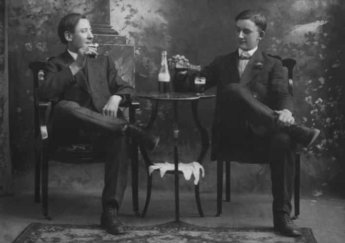

James Augustine is a writer and classically trained musician who enjoys hitting on beautiful girls and finding new and better ways to evolve in his masculinity. Follow James on Twitter


A rite of passage has been the longstanding tradition to the footsteps of manhood in many cultures. Oftentimes, this rite involves a trial of will or endurance, usually resulting in some sort of pain, but you come out a better man on the other side. We’ve all heard of the African tribes that make you stick your hand into a pile of bullet ants, or go into the wild and bring back a lion lest you be killed by it yourself.
In what’s left of the rapidly feminizing Western society, one could deduce that our only remaining rite of passage comes at the age of twenty-one, where a man is suddenly responsible for his every action and he’s allowed to (legally) intake alcohol.
Though it may seem that your man-card is all at once issued along with your twenty-one-year-old ID, alcohol is the test that lasts a lifetime. Every time you drink, your character is challenged with how you will act and what decisions you will make.
Regardless of how free you feel when drunk, intoxication has become a cage the Western man has willingly put himself into under the guise of independence and feeling grown up. One must ask: is drinking the ongoing test of manhood, or is it the rotting wood underneath a house ready to collapse? How can this be our lion to catch?

I will be the first to say that I’ve seen plenty of men “handle” their drinking. They can almost use it as a tool, giving them that extra boost of confidence to game women or just relax at the end of the day. In this article, I’m not really talking about those men.
But let’s be honest: if you are a man who even at the very least gets wasted every month, you have a harmful pattern going on. The manosphere is all about the betterment of men, yet booze is so ingrained in our culture that it’s the default for every bit of fun. Want to go hit on girls? Let’s drink first. Want to go to dinner? Bottle of wine. Come over and watch the game? Twelve-pack of beer and we’ll get more at halftime.
Getting smashed every weekend is foretold as a phenomenon that begins in college and ends there, yet I can count on one hand the amount of regular men (or “normies,” as Alcoholics Anonymous dwellers label them) that I know who don’t at the very least get fucked up once a month. For most men, it’s about once a week. Some, every night. It’s almost not considered hanging out unless there’s some sort of booze fuckery involved, right? Unless you’re living on a different planet, this is most likely your observance as well.
The question of drinking often comes down to, “Is it wrong?” The philosophical quandary of right and wrong is for another essay I may have to write sometime, but the better question might be, “Is it helpful?” Is it helping us as men to be literally poisoning ourselves? Is alcohol helping us as men in finding good women to marry, or even at the base level of gaming and getting laid?
You would have to be quite the lawyer to convince an honest person the answer is anything besides a resounding no. Yet in our Clown World media, we are promised all of the women, parties, and good times of a rock star supermodel pimp from simply buying a pack of Bud Light. How can this be?

My story is one of somewhat typical American fashion. I had my first drink at sixteen and I fell head over heels with the warmth and synthetic love it gave me. Like many alcoholics, my drinking career started slow. I would drink on the weekends, get shitfaced every now and then, and not think about it until the next party.
Once I turned twenty-one, I found the magic of bars and night game. The fact that I could go to a place where the women were as drunk and morally loose as I was became a little slice of heaven. After getting into music and DJing, the bar scene morphed into backstage Roman orgies, where the booze was free and I found myself snorting coke off of groupies’ tits and banging them in the bathroom. Heaven, right?
The partying became a personal hell, where in order to act “like myself” around a social group or summon the courage to talk to women, I had to be somewhat intoxicated. The amount of times I embarrassed myself with girls because of drinking, whether it be not being able to get it up or turning a sexually-interested bartender into a woman looking at me with complete disgust from how sloppy I had gotten occurred more times than I care to admit.
I became ashamed of my drinking, and I drank to feel unashamed.
After about 12 years of progressive hard drinking and partying, I found myself in rehab. When I called my mother so drunkenly one afternoon, explaining how I wanted to drive and kill myself, an intervention was staged. I barely remember it. I know what you’re thinking: “What a pussy.” Perhaps you’re right; I simply couldn’t deal.
But I defy you to find a man who has gotten sober and not show me a better man than he was before. My sobriety has become the thing I do least in this world to please others; I do it to please myself.
Even though I haven’t been sober as long as I was a lush, I can tell you one thing for certain: I have finally learned how to act like a man. I no longer struggle to talk to women or get laid; if anything, it’s become second nature to me. I no longer struggle to find true, lasting friendships, built on solid ground. I no longer struggle to talk to God and ask for guidance.
In this spirit, I implore every manosphere-minded guy out there to truly take a break from drinking for a period of time and feel the difference. It doesn’t have to be forever, but for me, the benefits sell themselves.
Being able to drink is not the rite of manhood; drinking is simply test of emotional endurance, but you do not come back a better man. If you want to realize what your true test is as a man, just remember, no one can tell it to you.
You must go out, struggle with the pain, and come back victorious. You cannot fight the lion forever. Eventually, it’s eat or be eaten.
In my time of drinking, I would’ve laughed in your face had you told me I would become a boring sober dude one day, but I didn’t know that sobriety would actually give me the capability and courage to become interesting, and not just another human gin bottle sitting on a bar stool. Here are some steps you can take to kick your drinking habit and find your inner man who’s free of addiction.

If you are anything like me (sorry for you), going to the gym hungover isn’t an option. If you actually purchase an expensive gym membership, you will be kicking yourself every day that you don’t use it. Don’t work out at home: go to a gym and spend the dough.
Although this isn’t the most hardcore approach to quitting booze (we’ll get to that), gym membership is a great way to convince your body that health is the way to go, and to not be a beer-bloated mess. Also, there’s hot, health-minded girls there, duh.
This is the one you didn’t want to hear, but I hate to tell you: it fricking works. I went to my first Alcoholics Anonymous meeting about six months before I actually decided to quit drinking for good. I did this initially to silence a nagging girlfriend at the time, not thinking I would actually take it seriously.
The stories I heard that day from hardcore, in the gutter, floor-licking alcoholics frightened me to my core. Not because of the severity of their stories, but because I saw myself in them; their journeys all pretty much started the same way mine did, and it really woke me up. Of course, I drank for a bit after that, but the seed was planted that day and I’ll remember that meeting for the rest of my life.
We all have those buddies who bring booze every time they come over to your house without even asking. Hell, you might be that guy. Whether it’s the pack of nerd-bros from your work that you go to the local shithole with for a mid-week game of, “I’m buying this round!” or it’s the wingman Chad you meet up with on Friday nights for drinks and chasing tail, you’ll probably need some time off from these other drunks in order to truly abstain.
At a certain point (if you opt in for long-term sobriety), you’ll be able to meet up with these guys again, and even when they’re shoving shots in your face you’ll be able to say, “Thanks, I’m good, dude!” and then go on your merry way of gaming girls where you have the upper hand of sobriety on all the other drunk idiots.
For me, this took about 3-4 months before I was able to go back into the wild and resist drinking, but once I did, I actually had a lot more fun, and I certainly stopped waking up the next morning asking myself what in the fuck I did last night and what do I have to regret today. And just remember, if you can’t hangout with a dude without drinking, he’s probably not your real friend, anyhow.
Okay, this is the one you actually didn’t want to hear. But again, this shit works. Rehab is your Alamo, and once you’ve talked about all your problems to a bunch of other degenerate druggies and alcoholics, you’ll form a strange bond that will stick with you forever and definitely make you think twice before you ever pick up a bottle again. What they say is true: rehab ruins your drinking.

The only way I’ve truly been able to truly abstain from drinking was a change of mindset. Like everything else, you cannot do something well unless you fully commit. It’s a basic psychological principle, but you have to be the one to do this, no one else. Don’t pussyfoot around your decision; declare your intentions and commit.
For me, the best thing I heard someone say was, “try sobriety for a year, then see how you feel.” A whole year sounds crazy, but it isn’t that long, my friends. If it sounds like it is, one could argue you have a dependency issue.
The yearlong commitment wasn’t the end of the line for me, but it put things into an obtainable box, rather than saying FOR-EV-ER. Choose your reasonable amount of time off from drinking and then forget about it and move on. One day at a time. The results will speak for themselves and who knows, you just might like yourself a little more each day.
“God, grant me the serenity to accept the things I cannot change, the courage to change the things I can, and the wisdom to know the difference.” Good luck, fellow drunkards!